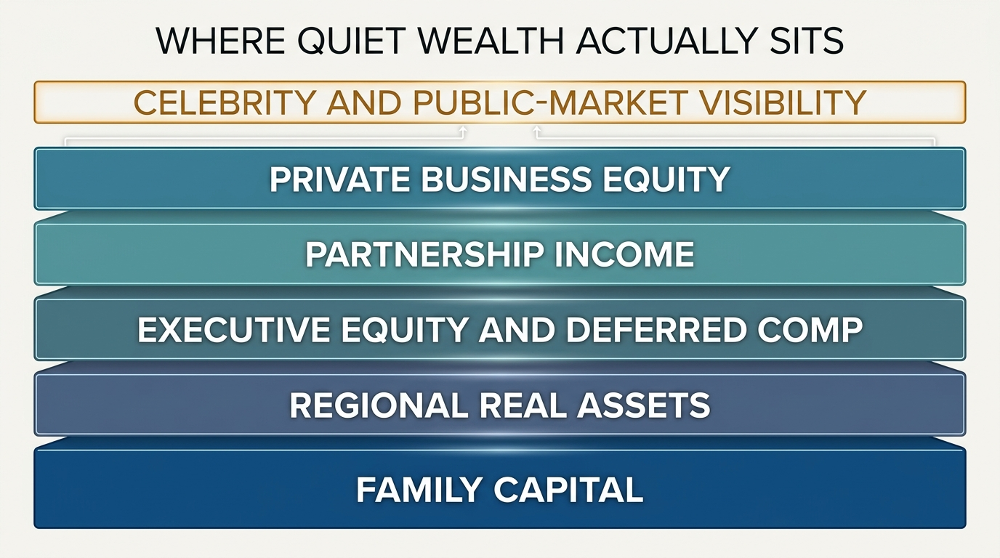

The Rich but Not Famous Economy
Most people picture the upper tier through celebrities, founders with public profiles, or the handful of billionaires who dominate headlines. That picture is directionally true at the very top and deeply misleading one layer beneath it. A large share of high income and serious wealth sits with people who are locally visible, professionally powerful, and nationally obscure.
The hidden tier includes owners of mid-sized firms, partners in law, medicine, consulting, private equity, and accounting, senior executives with concentrated equity, specialized contractors, regional real-estate operators, and families holding private business cash flows. They are not invisible to tax data or bank underwriting. They are invisible to cultural attention. That mismatch distorts how households think about wealth distribution, competition, and what a rich life actually looks like.
Core thesis: the rich but not famous economy is the layer of serious wealth built outside mass recognition. It matters because many of the households competing for prime housing, private schools, concierge services, private investments, and political access do not look famous at all. They look like professionals, operators, and owners with quiet but powerful balance sheets.

Why People Systematically Misread The Upper Tier
Wealth is easier to notice when it is dramatized. Public companies mark fortunes to market every day. Celebrities convert income into visible consumption. Venture-backed founders generate narratives large enough to become media products. Quiet wealth behaves differently. It is often tied to distributions from private firms, retained earnings, carried interests, local monopolies, or professional partnerships that throw off large income without turning the owner into a public figure.
This matters because households infer the shape of the economy from the wealth they can see. That can produce two errors at once. They overestimate how much of the upper tier is built through rare public stardom, and they underestimate how much sits inside ownership structures that look ordinary from the outside.
The Quiet Rich Often Control The Most Competitive Markets
The rich but not famous matter most where households encounter them directly. Prime suburban housing markets, boutique commercial real estate, specialist service businesses, elective medicine, regional politics, donor networks, and private-school admissions all contain more quiet capital than public fame. A family does not need celebrity status to bid up a neighborhood if it owns a profitable business, large pass-through income, and appreciated illiquid assets.
This is one reason cost pressure can feel mysterious to households benchmarking themselves against salary alone. They are often not competing only with salaried peers. They are competing with partners, owners, and executives whose compensation mixes cash flow, equity, and tax-advantaged gains in ways that are less visible than a headline wage.
Private Business Ownership Is Central To The Pattern
At high net worth levels, private business equity matters disproportionately. Public discussion often treats capital as if it mostly means stocks in large listed firms. In practice, closely held companies, pass-through entities, professional practices, and family firms remain a major reservoir of wealth. Their owners may have no national profile at all. They may still control more balance-sheet power than people with far more public attention.
That ownership structure changes behavior. Private owners can manage timing of distributions, compensation mix, investment pace, and estate planning differently from salaried households. Their income may look volatile on paper while their underlying control over capital is strong. The market sees less of the asset. The household still lives inside its advantages.

Why This Creates Social And Strategic Distortion
The first distortion is cultural. People compare themselves to the wrong benchmark. They imagine that real wealth requires either huge public status or inherited dynastic capital. That misses the large middle band of households that became rich through ownership, specialized scarcity, and long compounding inside opaque structures.
The second distortion is strategic. If households misidentify where the money is, they misread where optionality comes from. Quiet wealth is often built less through headline salary and more through ownership percentage, tax structure, regional market power, and the ability to retain capital inside businesses. That is a different playbook from maximizing visible compensation alone.
What A Reader Should Watch Instead Of Fame
- Ownership share. A modestly scaled firm with strong margins can create more lasting wealth than a prestigious salary with no equity.
- Control over cash-flow timing. The ability to decide when income is realized changes tax drag, reinvestment capacity, and resilience.
- Regional concentration of capital. Quiet rich households often dominate local markets because their wealth is operational rather than performative.
- Access to private deal flow. Once a household enters the quiet upper tier, networks, financing, and co-investment access improve materially.
- Balance-sheet opacity. If competitors cannot see the full asset base, public status becomes a weak proxy for real economic power.
Known, Inferred, And Unknown
| Category | Assessment |
|---|---|
| Known | High income and wealth are not confined to celebrities or publicly visible founders. Tax and household-balance-sheet data show major roles for business owners, executives, and professional partnerships. |
| Known | Private business equity forms a large share of wealth for many top-net-worth households, which makes parts of the upper tier less visible than public-market wealth. |
| Known | Household competition in housing, schooling, and local services is often shaped by quiet capital rather than by nationally visible fame. |
| Inferred | Many households misread their economic competition because they benchmark against salary and public fame instead of against ownership-based local wealth. |
| Unknown | How much the quiet upper tier will expand as more income shifts toward private firms, pass-through entities, and concentrated professional niches in the next decade. |
The Practical Reading For WealthMeter Users
The useful correction is simple. Do not treat fame as a proxy for economic power. The wealth hierarchy you compete with in real life is broader, quieter, and more locally embedded than the media version. That matters for housing choices, career design, asset allocation, and the benchmark you use to judge whether a household is actually rich.
Once that adjustment is made, several WealthMeter patterns become easier to see. The salary ceiling matters. Ownership matters more. Liquidity still matters because private wealth can be thick and brittle at the same time. The households with the most strategic freedom are often not the ones everyone recognizes. They are the ones whose capital structure gives them range without requiring public attention.
Further Reading Inside The Site
This article connects directly to The Asset-Rich, Cash-Poor Paradox, The Career Optionality Gap, and The Equity Compensation Trap. Together they show why upper-tier wealth depends less on visible status than on ownership design, liquidity structure, and control over optionality.
Source List
Bakija J, Cole A, Heim B. Jobs and Income Growth of Top Earners and the Causes of Changing Income Inequality. Working paper. 2012.
Smith M, Yagan D, Zidar O, Zwick E. Capitalists in the Twenty-First Century. Quarterly Journal of Economics. 2023.
Federal Reserve Board. Survey of Consumer Finances. 2022 survey release.
Auten G, Splinter D. Income Inequality in the United States: Using Tax Data to Measure Long-Term Trends. Journal of Political Economy. 2024.